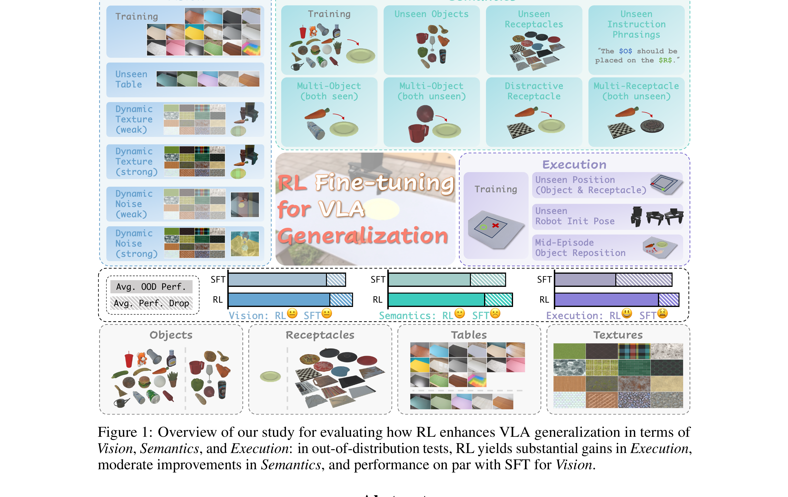

What Can RL Bring to VLA Generalization? An Empirical Study
Liu 等 · 2025/2026 · arXiv:2505.19789 · Zotero 96K6JKE6
这篇论文不再只问 RL 能否提高训练任务成功率，而是把泛化拆成视觉、语义与执行三个维度，系统比较 PPO、DPO、GRPO 和 SFT。
§1 Introduction：RL 给 VLA 带来的究竟是哪一种泛化
“RL 能提升 VLA”常被一个最终成功率概括，但泛化至少包含三种不同能力：视觉外观变化下仍能识别状态，语言/任务变化下仍能理解目标，执行受扰或偏离示范后仍能恢复。SFT 的 compounding error 主要伤害第三类，而大模型语义先验可能让前两类已有较强基础。
这篇工作控制 VLA 基座与数据，比较 SFT、DPO/GRPO 类离线偏好更新和在线 PPO，并从 Vision、Language、Execution 三轴构建评测。问题不是为某个新算法夺榜，而是定位 RL 的真实增益来源：它是否学会了新语义、增强了抗视觉扰动，还是主要通过闭环反馈改善中途恢复和长程信用分配。
展开原文 · 研究问题
“what specific generalization benefits RL provides for VLAs compared to SFT”
§2 Related Work：VLA scaling、RLHF 与机器人在线 RL 的交叉处
VLA scaling 通过更大 VLM、更多机器人示范提高物体和语言泛化；LLM 后训练用 PPO、DPO、GRPO 优化可验证奖励或偏好。机器人环境却是连续控制、非平稳状态和稀疏终局反馈，GRPO 的组内比较、DPO 的离线偏好都可能因状态分布不同而失真。
真实机器人 RL 工作已经展示 intervention、critic 和 off-policy replay 的价值，但通常模型较小、任务较窄。本研究把标准在线 PPO 直接用于 VLA，并与离线方法对齐，强调评价时必须分开“语义理解”和“执行鲁棒性”；否则在线 RL 在中途恢复上的优势会被误写成全方位知识增长。
§3 问题设定：SFT 到底漏掉了什么
VLA 预训练与 SFT 解决“从观测到动作的模仿”，但部署是闭环过程：动作会改变下一帧，错误会把策略带到演示没有覆盖的状态。SFT 的开环动作拟合会在闭环分布偏移下累积误差，但此前缺少 VLA 泛化维度上的系统实证。
研究以 warmed-up OpenVLA 为共同初始化，把泛化拆为 Vision、Semantics 与 Execution，而不是只汇报一个平均成功率。
展开原文 · 核心主张
“PPO significantly enhances generalization in semantic understanding and execution robustness.”
§4 方法总览：反馈信号怎么走
上一节明确了状态、动作与反馈，现在沿论文原图追踪训练信号。重点不是背模块名，而是判断：哪部分保持预训练先验，哪部分真的被 RL 改写。

1. 建立视觉、语义、执行三类分布外测试
先把 OOD 拆成视觉外观、语言组合和执行扰动三类测试，而不是只做一个总平均。这样可以判断 RL 改善的是识别、指令理解，还是闭环恢复能力。
输入是什么：相机图像或视频，加上任务指令和机器人当前状态。它们还是原始观测，模型尚未把它们变成可用于预测或控制的特征。
这一步究竟做什么：先把 OOD 拆成视觉外观、语言组合和执行扰动三类测试，而不是只做一个总平均。这样可以判断 RL 改善的是识别、指令理解，还是闭环恢复能力。
输出到哪里：可发送给机器人控制器的动作，以及执行后重新观测到的真实状态。这个结果会交给下一步“从同一 VLA 基座出发做 SFT 与多种 RL 微调”继续处理。
为什么不能省略：机器人动作会改变下一次观测；只有执行后重新读取现实，才能发现预测误差并阻止错误连续累积。
2. 从同一 VLA 基座出发做 SFT 与多种 RL 微调
所有方法从同一 VLA checkpoint 与相同 SFT 数据出发，再分别做 PPO/DPO/GRPO 等后训练。控制初始化很重要，否则大基座差异会被错误归因成 RL 算法差异。
输入是什么：来自上一步“建立视觉、语义、执行三类分布外测试”的产物：可发送给机器人控制器的动作，以及执行后重新观测到的真实状态。本步骤还会按论文设置读取当前条件、时间步或训练信号。
这一步究竟做什么：所有方法从同一 VLA checkpoint 与相同 SFT 数据出发，再分别做 PPO/DPO/GRPO 等后训练。控制初始化很重要，否则大基座差异会被错误归因成 RL 算法差异。
输出到哪里：参数得到更新的模型，或能供下一轮训练使用的新监督信号。这个结果会交给下一步“用闭环 rollout 收集任务回报”继续处理。
为什么不能省略：前面的数据或分数本身不会自动改变模型；必须通过损失函数把误差信号变成参数更新。
3. 用闭环 rollout 收集任务回报
每个测试都用闭环 rollout 记录成功、恢复和失败模式。环境反馈衡量真实动作后果，而非离线 action accuracy；因此能观察 compounding error 是否被 RL 修正。
输入是什么：来自上一步“从同一 VLA 基座出发做 SFT 与多种 RL 微调”的产物：参数得到更新的模型，或能供下一轮训练使用的新监督信号。本步骤还会按论文设置读取当前条件、时间步或训练信号。
这一步究竟做什么：每个测试都用闭环 rollout 记录成功、恢复和失败模式。环境反馈衡量真实动作后果，而非离线 action accuracy；因此能观察 compounding error 是否被 RL 修正。
输出到哪里：一个或多个候选未来、动作或轨迹，以及必要的中间状态。这个结果会交给下一步“比较 PPO、DPO、GRPO 对各维度的真实增益”继续处理。
为什么不能省略：机器人动作会改变下一次观测；只有执行后重新读取现实，才能发现预测误差并阻止错误连续累积。
4. 比较 PPO、DPO、GRPO 对各维度的真实增益
最后按三类分布偏移分别比较增益。若只在执行扰动上提高，结论应是 RL 增强闭环鲁棒，而不是宣称视觉或语言泛化普遍提升。
输入是什么：来自上一步“用闭环 rollout 收集任务回报”的产物：一个或多个候选未来、动作或轨迹，以及必要的中间状态。本步骤还会按论文设置读取当前条件、时间步或训练信号。
这一步究竟做什么：最后按三类分布偏移分别比较增益。若只在执行扰动上提高，结论应是 RL 增强闭环鲁棒，而不是宣称视觉或语言泛化普遍提升。
输出到哪里：经过本步骤处理、含义更明确的中间结果。这是图中这条链路的最终产物，随后会进入真实执行、模型更新或指标评测。
为什么不能省略：它把前面得到的内部结果落实为可执行动作、可训练模型或可解释指标，完成从方法到结果的最后一步。
§5 机制细拆：动作、价值与更新边界
上图给出了宏观流程，但真正决定训练是否稳定的是三个接口：动作以什么粒度出现、反馈怎样变成可学习信号、哪些参数允许被更新。
§6 目标函数：把直觉压缩成可检查的量
前一节说清了信号路径，这里把核心优化目标写成教学化公式。读公式时依次检查：回报影响谁、数据支持在哪里、预训练策略受到什么约束。
- $r_t$
- 新旧策略概率比
- $A_t$
- 闭环回报估计出的优势
- $\epsilon$
- 限制单次更新幅度
实验采用参数高效微调，并让 actor 与 critic 共享视觉语言表征；关键工程是稳定 PPO 的价值预测与 rollout 数据覆盖。
§7 训练与评测：数字是在什么条件下得到的
只看最终成功率会隐藏数据预算、仿真/真机差异和基座强弱。本节把论文的实验对象与比较关系放回同一张表。
| 策略与动作 | 研究以 warmed-up OpenVLA 为共同初始化，把泛化拆为 Vision、Semantics 与 Execution，而不是只汇报一个平均成功率。 |
|---|---|
| 训练反馈 | SFT 只看专家动作；PPO 使用环境 rollout 的 advantage。DPO/GRPO 被作为从 LLM 后训练迁来的替代反馈形式。 |
| 更新方式 | 实验采用参数高效微调，并让 actor 与 critic 共享视觉语言表征；关键工程是稳定 PPO 的价值预测与 rollout 数据覆盖。 |
| 实验覆盖 | 在仿真和真实环境中构造颜色/背景等视觉变化、未见物体与语言组合、位置与扰动等执行变化；LoRA rank 32 用于保证微调容量。 |
| 关键对照 | PPO 在语义和执行维度优于 SFT，视觉维度大体持平；DPO/GRPO 并未自然继承 LLM 场景中的优势。 |
§8 结果怎么读：证据、因果与可迁移结论
论文报告 PPO 明显改善语义理解与执行鲁棒性，同时视觉鲁棒性与 SFT 大体相当；PPO 比 DPO/GRPO 更有效。
PPO 在语义和执行维度优于 SFT，视觉维度大体持平；DPO/GRPO 并未自然继承 LLM 场景中的优势。
RL 的价值更像‘扩大可恢复状态分布’，不是让视觉编码器自动获得任意域泛化。
§9 复现与工程检查
前一节判断了证据强度，复现时还要把训练信号对齐、时间尺度和数据统计逐项落地，否则“同名算法”也可能得到完全不同的结果。
- IND 与 OOD 必须只改变一个因素；SFT/RL 要共享初始化、数据预算与评测次数；同时记录轨迹覆盖范围而不只记录终局成功。
- 先跑通不加 RL 的预训练/SFT 基线，并保存逐任务成功率与失败视频。
- 同时记录环境步数、真实墙钟时间、人工介入次数、更新次数和推理延迟。
- 把奖励、终止、action chunk mask 与归一化统计做成可视化单元测试。
§10 适用边界与研究启发
结论来自特定 VLA、任务和奖励设置，不能直接外推为‘任何 RL 都提升任何泛化’。
RL 的价值更像‘扩大可恢复状态分布’，不是让视觉编码器自动获得任意域泛化。